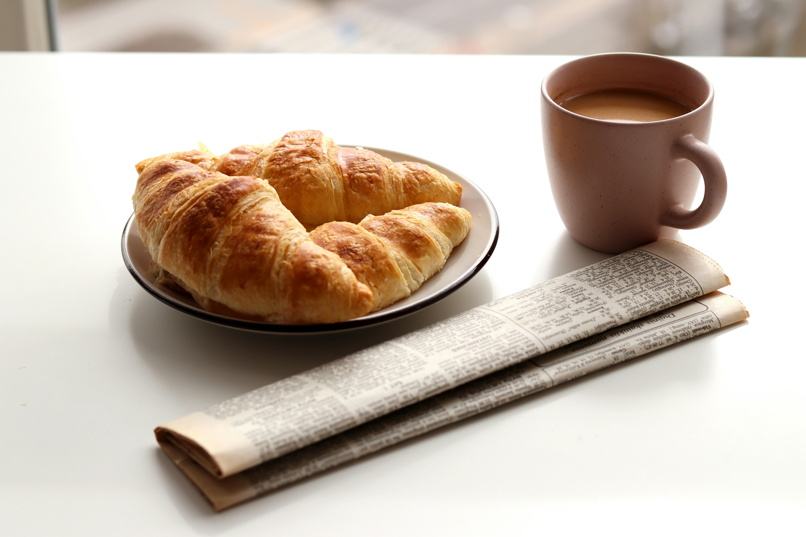

Located just off the Thames Street in Fell's Point, The Daily Loaf brings together Sarah's two loves: storytelling and sourdough. Every morning, we "publish" fresh batches of artisan breads and pastries using traditional techniques and local ingredients. Just like a great news story, our baking is honest, crafted with care, and meant to be shared.
Whether you're a student pulling an all-nighter or a professional preparing for morning calls, The Daily Loaf is your daily source for fresh-baked goodness.

1837 Thames Street,
Baltimore, MD, 21231
6 a.m. to 3 p.m. daily
Our signature bakes, hot off the press


Buttery, gooey cinnamon rolls with cream cheese frosting. So good, they make the headlines every weekend. Get here early—they sell out before noon!

Small-batch cold brew coffee steeped for 24 hours. Smooth, bold, and strong enough to fuel any deadline. Served over ice or straight up. Local beans from Ceremony Coffee Roasters.

Flaky, buttery croissants that take 3 days to make. Layers upon layers of investigation...we mean, lamination. Available plain or filled with chocolate or almond cream.
"As a journalism major, I had to try this place. The Breaking News Sourdough lives up
to the hype!
Now
I'm here every Tuesday morning before class. The owner Sarah always remembers my order."
-- Alex P.
"The Press Room Cold Brew is my secret weapon for long days. Strong enough to keep me
alert but
smooth
enough to drink all day. Plus the cinnamon rolls? Front-page worthy!"
-- Jordan M.
"Love the journalism theme and the bread is even better than the puns. The Everything
Bagels are my
go-to
breakfast before hitting the library. Plus, the student discount is clutch!"
-- Casey R.